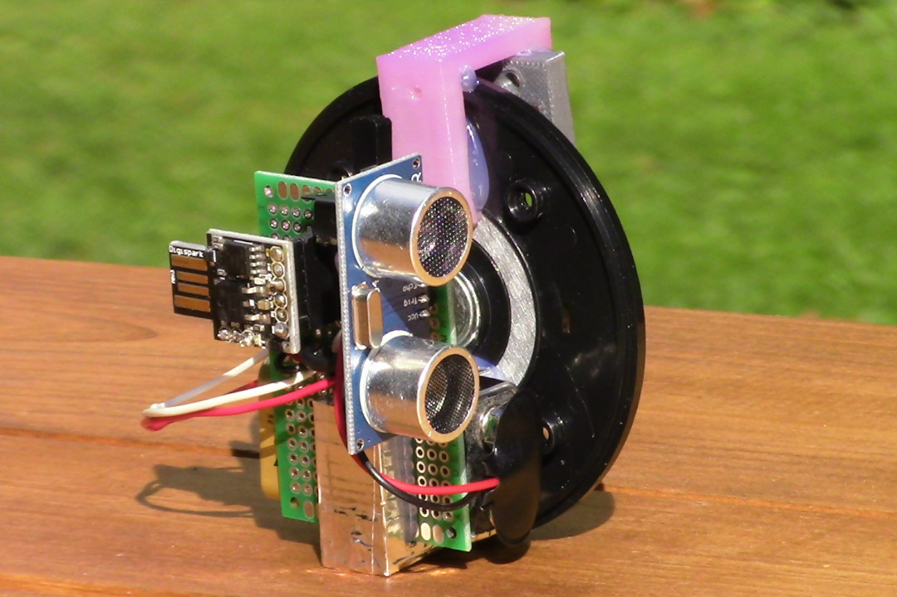

The Social Distance Sensor

The social distance sensor is a mask-mounted range finder that emits an audible tone whenever it detects a surface within six feet. The pitch of this tone increases as the detected surface becomes closer. This helps the wearer to maintain a six foot gap between him or herself and other individuals.
In addition to helping the wearer maintain social distance from other people, it also indiscriminately helps him or her to maintain social distance from animals, walls, trees, shelves, food, phones, or anything else at which he or she may glance. Also, the constantly shifting tones serve to make the wearer feel as if he or she is living in a cheap arcade game. As far as I can tell, this is the most practical and long-term solution to the pandemic.